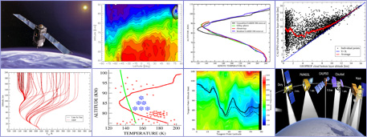

Artem Feofilov is an atmospheric physicist currently affiliated with the
Laboratory of Dynamic Meteorology (LMD) at Ecole Polytechnique, Paris, France. He specializes
in radiative transfer in molecular bands, remote sensing
of trace gas distributions (CO2, O3, H2O)
up to the lower thermosphere, and retrieval of cloud properties from
passive (IR) and active space-borne sounders in the lower atmosphere.


Experimental experience
Artem Feofilov started studying the interactions of light and matter at the Dept. of Photonics of St. Petersburg State University, Russia.
His Ph.D. work "Single-color laser ionization
of some oxygen-containing benzene derivatives" was dedicated to establishing the correlations
between the electronic structure of the molecules and mechanisms of laser ionization using the methods of photoelectron spectroscopy, mass-spectroscopy, and threshold electron spectroscopy (ZEKE).
{kind=link}
Scientific expertise
Dr. Feofilov has been doing research aimed at better understanding of fundamental processes governing the energetics, chemistry, dyna- mics, and transport of the mesosphere/lower thermo- sphere.
His main field is the radiative transfer and breakdown of local thermo- dynamic equilibrium (non-LTE) in planetary atmo- spheres. His interests include:
a) developing theoretical app- roaches for processing the radiometric data;
b) developing the non-LTE models and retrieval algo- rithms for interpreting the IR radiance measurements;
c) analysis of cloud properties from passive and active satellite observations.
Current activity
Cloud properties retrieval from the infrared satellite observations >>>.
Diurnal cycle of high clouds retrieved from AIRS and IASI.
Non-LTE radiative transfer in the context of infrared satellite observations of the lower atmosphere.